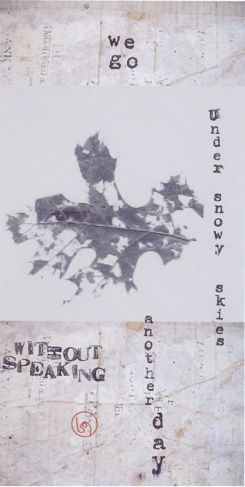

Gary LeBel
Cumming, Georgia USA
Vox Humana
Shriveled and broken, the tangled stems of tomato plants in her modest garden thread the air with a vague oppressiveness. A cold wind blows incessantly, and when it plunges its hands under the blankets of dead leaves, they break into frightened sparrows…then its bony fingertips reach in under mine for they know exactly where my heart is, and how to make it colder.  |